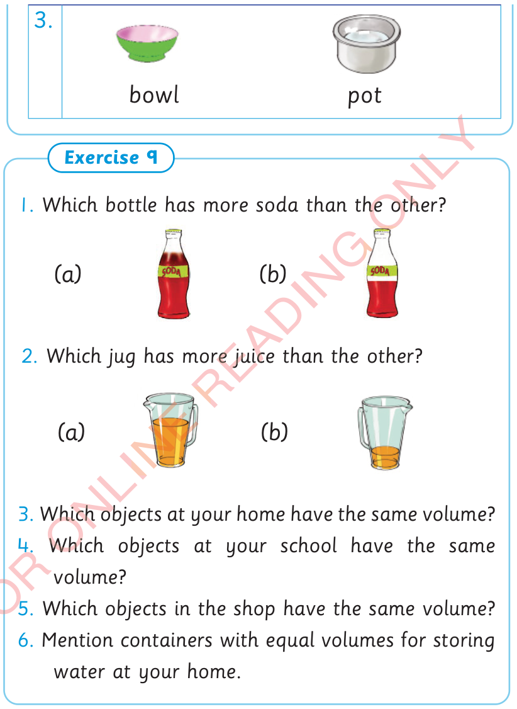

127



Exercise 8 continues. 3. bowl. pot. Exercise 9. 1. Which bottle has more soda than the other? Bottle a is filled to about three-quarters, and bottle b is filled to about half. 2. Which jug has more juice than the other? Jug a is filled to about half, while jug b has a small amount at the bottom. 3. Which objects at your home have the same volume? 4. Which objects at your school have the same volume? 5. Which objects in the shop have the same volume? 6. Mention containers with equal volumes for storing water at your home.


bowl
pot
Exercise 9
1. Which bottle has more soda than the other?
(a)

(b)

2. Which jug has more juice than the other?
(a)

(b)

3. Which objects at your home have the same volume?
4. Which objects at your school have the same volume?
5. Which objects in the shop have the same volume?
6. Mention containers with equal volumes for storing water at your home.


ARITHMETICS PUPIL'S STD 2.indd 127
06/11/2024 17:23